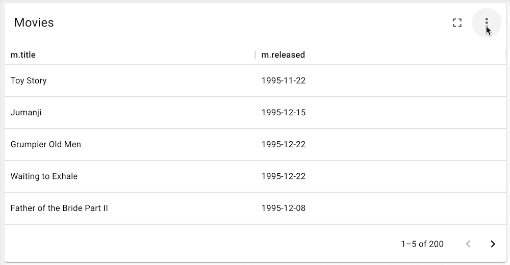
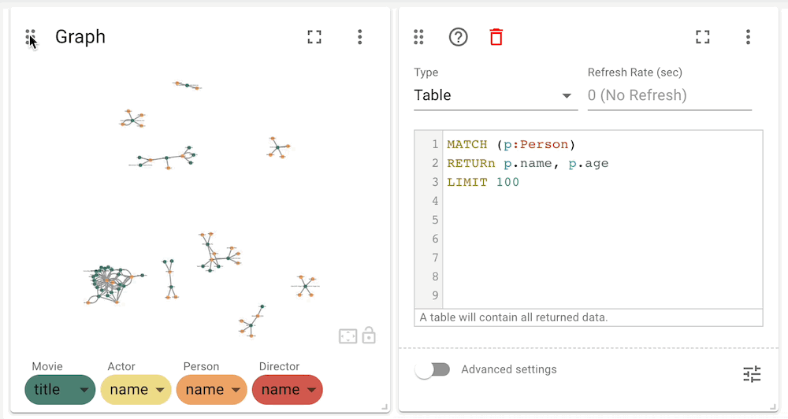
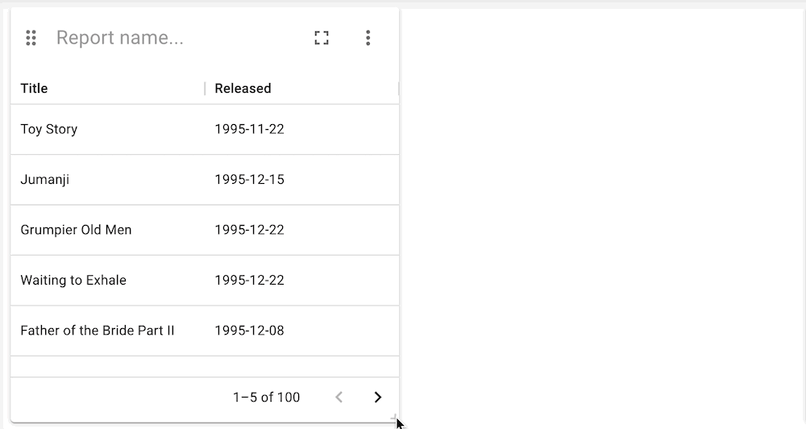

Reports
|
This documentation pertains to the (legacy) unsupported version of NeoDash. For users of the supported NeoDash offering, refer to NeoDash commercial. |
A report is the smallest building build of your dashboard. Each report will have a single Cypher query behind it that is used to populate the report. Reports can be of several types (graph, table, bar chart, etc.), each of which expect different types of data. See the relevant documentation pages for more information.
A report can be given a title, which will be displayed in the dashboard header. To change the query of a report, open the settings by clicking the (⋮) icon on the top right of the report.

The settings window additionally allows you to change the type of report, the refresh rate of the report, and a number of Advanced Settings. The advanced settings differ between the different report types, and can be viewed by toggling the switch on the bottom left of the settings page.
Create and Delete Reports
A new report can be added to a page by clicking the large (+) button at the end of the page. By default, a report will have nothing defined, so you will need to set the query before any data is visualized.
Reports can be deleted by opening the report settings, and clicking the 🗑️ icon in the report header.
Re-order Reports
As of NeoDash 2.1, reports can be re-ordered by dragging and dropping them around the page. To move a report, grab it by the handle (top left corner), and drag it to the desired location.

Resize Reports
As of NeoDash 2.1, reports can be resized by grabbing their bottom-right corner, and dragging your mouse to the desired size.

Writing Queries
A single Cypher query is used to populate each report. As any Cypher syntax is supported, this includes APOC, GDS, and even Fabric!
Keep the following best practises in mind when writing your Cypher queries:
-
Always use a
LIMITin your query to keep the result size manageable. -
Ensure you return the right data types for the right report type. For example, a graph report expects nodes and relationships, whereas a line chart expects numbers.
Row Limiting
NeoDash has a built-in post-query row limiter. This means that results are truncated to a maximum number of rows, depending on the report type. The row limiter is in place to ensure that visualizations do not become too complex for the browser to handle.
Note that even though the row limiter is enabled by default, rows are
only limited after the query is executed. For this reason, it is
recommended to use the LIMIT clause in your query at all times.
Parameters
Parameters can be set in a dashboard by using a Parameter Select report. Set parameters are then available in any Cypher query across the dashboard.
In addition, session parameters are available based on the currently active database connection.
Parameter |
Description |
$session_uri |
The URI of the current active database connection. |
$session_database |
The Neo4j database that was connected to when the user logged in. |
$session_username |
The username used to authenticate to Neo4j. |